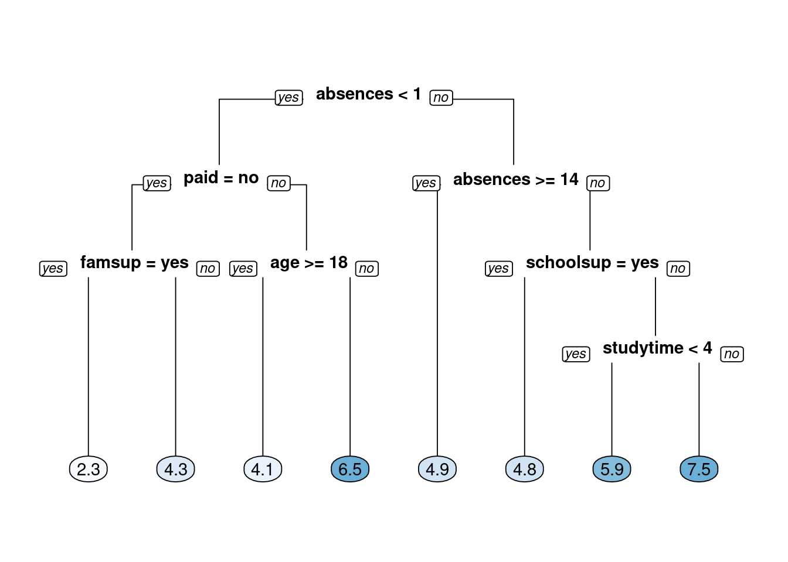
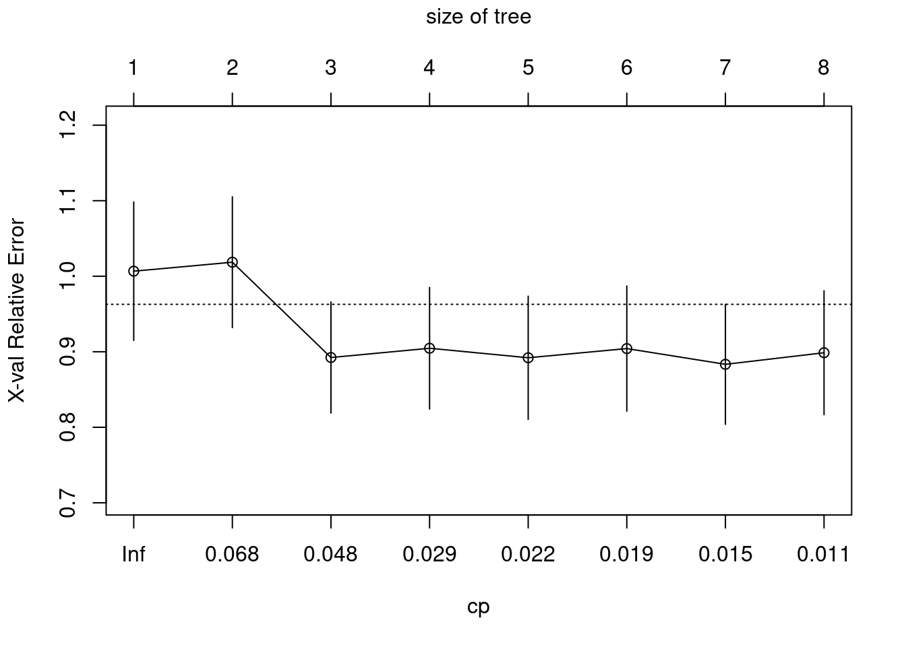
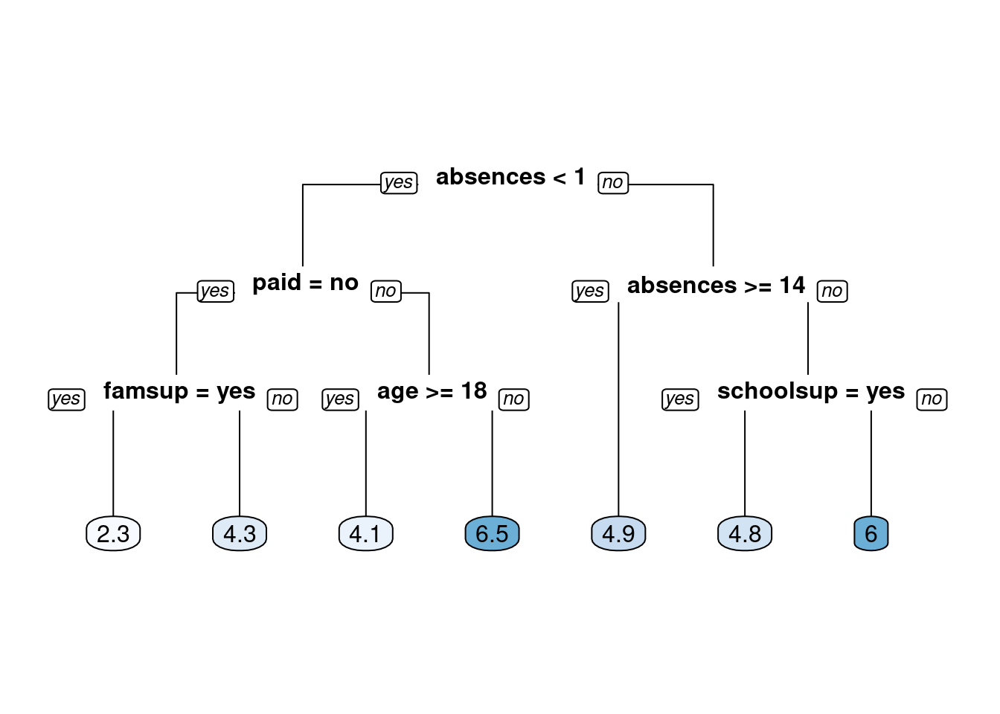

Chapter 3 Regression Trees
3.1 Introduction to Regression Trees
3.1.1 Classification vs. regression
What is the difference between classification and regression?
In classification, the response represents a category (e.g. “apples”, “oranges”, “bananas”).
In regression, the response represents a numeric value (e.g. price of a house).
All of the above.
None of the above.
3.2 Split the data
The goal of this exercise is to predict a student’s final Mathematics grade based on the following variables: sex, age, address, studytime (weekly study time), schoolsup (extra educational support), famsup (family educational support), paid (extra paid classes within the course subject) and absences.
The response is final_grade (numeric: from 0 to 20, output target).
After initial exploration, split the data into training, validation, and test sets. In this chapter, we will introduce the idea of a validation set, which can be used to select a “best” model from a set of competing models.
In Chapter 1, we demonstrated a simple way to split the data into two pieces using the sample() function. In this exercise, we will take a slightly different approach to splitting the data that allows us to split the data into more than two parts (here, we want three: train, validation, test). We still use the sample() function, but instead of sampling the indices themselves, we will assign each row to either the training, validation or test sets according to a probability distribution.
Exercise
These examples will use a subset of the Student Performance Dataset from UCI ML Dataset Repository.
The dataset grade is already in your workspace.
- Take a look at the data using the
str()function.
spec_tbl_df[,8] [395 × 8] (S3: spec_tbl_df/tbl_df/tbl/data.frame)
$ final_grade: num [1:395] 3 3 5 7.5 5 7.5 5.5 3 9.5 7.5 ...
$ age : num [1:395] 18 17 15 15 16 16 16 17 15 15 ...
$ address : chr [1:395] "U" "U" "U" "U" ...
$ studytime : num [1:395] 2 2 2 3 2 2 2 2 2 2 ...
$ schoolsup : chr [1:395] "yes" "no" "yes" "no" ...
$ famsup : chr [1:395] "no" "yes" "no" "yes" ...
$ paid : chr [1:395] "no" "no" "yes" "yes" ...
$ absences : num [1:395] 6 4 10 2 4 10 0 6 0 0 ...
- attr(*, "spec")=
.. cols(
.. final_grade = col_double(),
.. age = col_double(),
.. address = col_character(),
.. studytime = col_double(),
.. schoolsup = col_character(),
.. famsup = col_character(),
.. paid = col_character(),
.. absences = col_double()
.. )- Set a seed (for reproducibility) and then sample n_train rows to define the set of training set indices.
- Draw a sample of size nrow(grade) from the number 1 to 3 (with replacement). You want approximately 70% of the sample to be 1 and the remaining 30% to be equally split between 2 and 3.
# Set seed and create assignment
set.seed(1)
assignment <- sample(1:3, size = nrow(grade), prob = c(0.7, 0.15, 0.15), replace = TRUE)- Subset
gradeusing the sample you just drew so that indices with the value 1 are ingrade_train, indices with the value 2 are ingrade_valid, and indices with 3 are ingrade_test.
# Create a train, validation and tests from the original data frame
grade_train <- grade[assignment == 1, ] # subset grade to training indices only
grade_valid <- grade[assignment == 2, ] # subset grade to validation indices only
grade_test <- grade[assignment == 3, ] # subset grade to test indices only3.3 Train a regression tree model
In this exercise, we will use the grade_train dataset to fit a regression tree using rpart() and visualize it using rpart.plot(). A regression tree plot looks identical to a classification tree plot, with the exception that there will be numeric values in the leaf nodes instead of predicted classes.
This is very similar to what we did previously in Chapter 1. When fitting a classification tree, we use method = "class", however, when fitting a regression tree, we need to set method = "anova". By default, the rpart() function will make an intelligent guess as to what the method value should be based on the data type of your response column, but it’s recommened that you explictly set the method for reproducibility reasons (since the auto-guesser may change in the future).
Exercise
The grade_train training set is loaded into the workspace.
- Using the
grade_traindataframe and the given formula, train a regresion tree.
- Look at the model output by printing the model object.
n= 282
node), split, n, deviance, yval
* denotes terminal node
1) root 282 1519.49700 5.271277
2) absences< 0.5 82 884.18600 4.323171
4) paid=no 50 565.50500 3.430000
8) famsup=yes 22 226.36360 2.272727 *
9) famsup=no 28 286.52680 4.339286 *
5) paid=yes 32 216.46880 5.718750
10) age>=17.5 10 82.90000 4.100000 *
11) age< 17.5 22 95.45455 6.454545 *
3) absences>=0.5 200 531.38000 5.660000
6) absences>=13.5 42 111.61900 4.904762 *
7) absences< 13.5 158 389.43670 5.860759
14) schoolsup=yes 23 50.21739 4.847826 *
15) schoolsup=no 135 311.60000 6.033333
30) studytime< 3.5 127 276.30710 5.940945 *
31) studytime>=3.5 8 17.00000 7.500000 *- Plot the decision tree using
rpart.plot().

3.4 Performance Metrics for Regression
3.4.1 Evaluate a regression tree model
Predict the final grade for all students in the test set. The grade is on a 0-20 scale. Evaluate the model based on test set RMSE (Root Mean Squared Error). RMSE tells us approximately how far away our predictions are from the true values.
Exercise
- First generate predictions on the
grade_testdata frame using thegrade_modelobject.
# Generate predictions on a test set
pred <- predict(object = grade_model, # model object
newdata = grade_test) # test dataset- After generating test set predictions, use the
rmse()function from the Metrics package to compute test set RMSE.
[1] 2.2782493.5 What are the Hyperparameters for a Decision Tree?
3.5.1 Tuning the Model
Tune (or “trim”) the model using the prune() function by finding the best “CP” value (CP stands for “Complexity Parameter”).
Exercise
- Print the CP Table, a matrix of information on the optimal prunings (based on CP).

CP nsplit rel error xerror xstd
1 0.06839852 0 1.0000000 1.0066743 0.09169976
2 0.06726713 1 0.9316015 1.0185398 0.08663026
3 0.03462630 2 0.8643344 0.8923588 0.07351895
4 0.02508343 3 0.8297080 0.9046335 0.08045100
5 0.01995676 4 0.8046246 0.8920489 0.08153881
6 0.01817661 5 0.7846679 0.9042142 0.08283114
7 0.01203879 6 0.7664912 0.8833557 0.07945742
8 0.01000000 7 0.7544525 0.8987112 0.08200148- Retrieve the optimal CP value; the value for CP which minimizes cross-validated error of the model.
# Retrieve optimal cp value based on cross-validated error
opt_index <- which.min(grade_model$cptable[, "xerror"])
cp_opt <- grade_model$cptable[opt_index, "CP"]- Use the
prune()function trim the tree, snipping off the least important splits, based on CP.
# Prune the model (to optimized cp value)
grade_model_opt <- prune(tree = grade_model,
cp = cp_opt)
# Plot the optimized model
rpart.plot(x = grade_model_opt, yesno = 2, type = 0, extra = 0)
3.6 Grid Search for Model Selection
3.6.1 Generate a grid of hyperparameter values
Use expand.grid() to generate a grid of maxdepth and minsplit values.
Exercise
- Establish a list of possible values for
minsplitandmaxdepth.
# Establish a list of possible values for minsplit and maxdepth
minsplit <- seq(1, 4, 1)
maxdepth <- seq(1, 6, 1)- Use the
expand.grid()function to generate a data frame containing all combinations
# Create a data frame containing all combinations
hyper_grid <- expand.grid(minsplit = minsplit, maxdepth = maxdepth)- Take a look at the resulting grid object
minsplit maxdepth
1 1 1
2 2 1
3 3 1
4 4 1
5 1 2
6 2 2[1] 243.6.2 Generate a grid of models
In this exercise, we will write a simple loop to train a “grid” of models and store the models in a list called grade_models. R users who are familiar with the apply functions in R could think about how this loop could be easily converted into a function applied to a list as an extra-credit thought experiment.
Exercise
- Create an empty list to store the models from the grid search.
# Number of potential models in the grid
num_models <- nrow(hyper_grid)
# Create an empty list to store models
grade_models <- list()- Write a loop that trains a model for each row in
hyper_gridand adds it to thegrade_modelslist.- The loop will by indexed by the rows of
hyper_grid. - For each row, there is a unique combination of the
minsplitandmaxdepthvalues that will be used to train a model.
- The loop will by indexed by the rows of
# Write a loop over the rows of hyper_grid to train the grid of models
for (i in 1:num_models) {
# Get minsplit, maxdepth values at row i
minsplit <- hyper_grid$minsplit[i]
maxdepth <- hyper_grid$maxdepth[i]
# Train a model and store in the list
grade_models[[i]] <- rpart(formula = final_grade ~ .,
data = grade_train,
method = "anova",
minsplit = minsplit,
maxdepth = maxdepth)
}3.6.3 Evaluate the grid
Earlier in the chapter we split the dataset into three parts: training, validation and test.
A dataset that is not used in training is sometimes referred to as a “holdout” set. A holdout set is used to estimate model performance and although both validation and test sets are considered to be holdout data, there is a key difference:
Just like a test set, a validation set is used to evaluate the performance of a model. The difference is that a validation set is specifically used to compare the performance of a group of models with the goal of choosing a “best model” from the group. All the models in a group are evaluated on the same validation set and the model with the best performance is considered to be the winner.
Once you have the best model, a final estimate of performance is computed on the test set.
A test set should only ever be used to estimate model performance and should not be used in model selection. Typically if you use a test set more than once, you are probably doing something wrong.
Exercise
- Write a loop that evaluates each model in the
grade_modelslist and stores the validation RMSE in a vector calledrmse_values.
# Number of potential models in the grid
num_models <- length(grade_models)
# Create an empty vector to store RMSE values
rmse_values <- c()
# Write a loop over the models to compute validation RMSE
for (i in 1:num_models) {
# Retrieve the i^th model from the list
model <- grade_models[[i]]
# Generate predictions on grade_valid
pred <- predict(object = model,
newdata = grade_valid)
# Compute validation RMSE and add to the
rmse_values[i] <- rmse(actual = grade_valid$final_grade,
predicted = pred)
}- The
which.min()function can be applied to thermse_valuesvector to identify the index containing the smallest RMSE value.- The model with the smallest validation set RMSE will be designated as the “best model”.
# Identify the model with smallest validation set RMSE
best_model <- grade_models[[which.min(rmse_values)]]- Inspect the model parameters of the best model.
- Generate predictions on the test set using the best model to compute test set RMSE.
# Compute test set RMSE on best_model
pred <- predict(object = best_model,
newdata = grade_test)
rmse(actual = grade_test$final_grade,
predicted = pred)[1] 2.124109